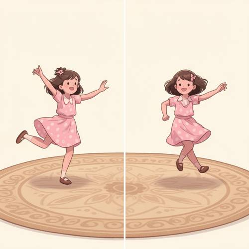
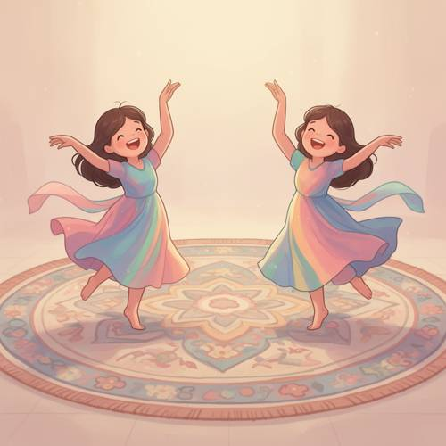
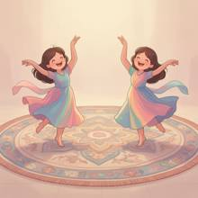
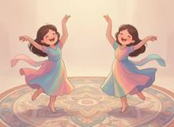

Entity Layout — Generating pictures: On the left and right sides of the screen, there
Generating pictures: On the left and right sides of the screen, there is a girl in similar posture. They are dancing on a huge circular carpet in a soft cartoon illustration style.

Direct — one call, no iteration

Continuum — Qwen3.8-27B + FLUX.2-dev
Judge — Direct
PASSEntity Layout - Two-Dimensional Space — The image is split vertically into two panels. There is a girl depicted on the left side and another depiction of a girl on the right side.
FAILRelationship - Similarity — The two girls are in different postures. The girl on the left has both arms raised and her left leg kicked back. The girl on the right has one arm raised and the other bent downwards, with her legs crossed in front. The postures are not similar.
PASSAttribute - Shape — There is a large carpet at the bottom of the image, spanning both panels. The carpet is depicted as an ellipse due to perspective but is clearly intended to be circular, with a round border and circular patterns.
PASSAction - Full-body (Character/Anthropomorphic) — Both girls are shown in dynamic, full-body poses that clearly represent the act of dancing. Their limbs are in motion, and their bodies are mid-movement.
PASSStyle — The image is rendered in an illustrative style with clean lines, soft and warm colors, and simplified, cute character designs, which aligns with the description of a 'soft cartoon illustration style'.
Judge — Continuum
PASSEntity Layout - Two-Dimensional Space — The image depicts two girls; one is positioned on the left side of the composition, and the other is on the right side.
PASSRelationship - Similarity — The two girls in the image are in nearly identical, mirrored postures. Both have their arms raised and spread, one leg lifted off the ground, and their heads tilted with happy expressions.
PASSAttribute - Shape — The girls are standing on a large, patterned carpet whose overall shape is circular.
PASSAction - Full-body (Character/Anthropomorphic) — The two girls are depicted mid-motion with their full bodies visible. Their arms are raised, one leg is lifted, and their dresses are swirling, which is consistent with the action of dancing.
PASSStyle — The image is created in an illustrative style characterized by soft lines, a warm and gentle color palette with pastel tones, and smoothly rendered shading. The characters have simplified, expressive features, which aligns with a soft cartoon illustration style.
What the agent did
Thinking
The user is asking for an image with the following content: - On the left and right sides of the screen, there are girls in similar poses - They are dancing on a giant round carpet (rug) - Soft cartoon illustration style First, let me generate this image.
Step 1 — `generate_image`
{
"prompt": "Soft cartoon illustration style, two identical girls with similar dancing poses, one on the left side of the screen and one on the right side, mirroring each other, both dancing gracefully on a huge circular patterned carpet, the large round rug dominates the scene, colorful flowing dresses, joyful expressions, arms raised in dance, soft pastel color palette, gentle warm lighting, whimsical storybook illustration, smooth clean lines, flat soft shading",
"width": 1344,
"height": 768,
"model": "flux2-dev"
}
Result img_0

Thinking
The image looks pretty good. Let's check: - Two girls in similar poses on the left and right sides of the screen ✓ (they're mirror images of each other, both dancing) - Dancing on a giant round carpet ✓ - Soft cartoon illustration style ✓ The image matches well. The carpet is huge and round. Both girls are in similar poses (mirrored). Soft pastel cartoon style. One thing to consider: the carpet appears to be an ellipse (perspective view), but since it's a carpet on the floor, it's a "round carpet" viewed from an angle. This is fine. To make sure there are no artifacts, let's look more carefully. I'll quickly check the faces and hands.
Step 2 — `inspect_region`
{
"image": "img_0",
"roi": [
"faces of both girls"
],
"padding": 0.2
}
Thinking
I need to pass a string, not a list. Let me try again.
Step 3 — `inspect_region`
{
"image": "img_0",
"roi": "faces and upper bodies of both girls",
"padding": 0.15
}
Result img_1

Thinking
In the cropped image, two girls are shown with faces, and they look fine — closed happy eyes, smiling, no obvious facial or hand artifacts. Both are in similar poses (mirrored), dancing on top of a large round carpet, in a soft cartoon style. The image matches the prompt well: - Left and right sides: ✓ the girls are on the left and right of the screen - Similar poses: ✓ mirrored poses - Dancing on a large round carpet: ✓ - Soft cartoon illustration style: ✓ This is a good result. I'll mark it as the best and stop.
Model
The crop shows both girls rendered cleanly — happy closed-eye smiles, no facial or hand artifacts, and their poses are near-mirrors as requested. The composition matches the prompt: one girl on each side of the screen, dancing on a huge circular carpet, in a soft pastel cartoon illustration style.
Step 4 — `mark_best`
{
"image": "img_0",
"reason": "Matches all prompt elements: girls on left and right sides in similar mirrored dancing poses, huge circular carpet, soft cartoon illustration style with pastel palette."
}
Thinking
The image is marked as the best. Since the result is good and matches the prompt, I should stop here.
Model
The image is complete and marked. It shows two girls in mirrored, similar dancing poses — one on the left, one on the right — twirling barefoot on a huge circular patterned carpet, all in a soft, pastel cartoon illustration style with flowing pastel dresses and joyful expressions.